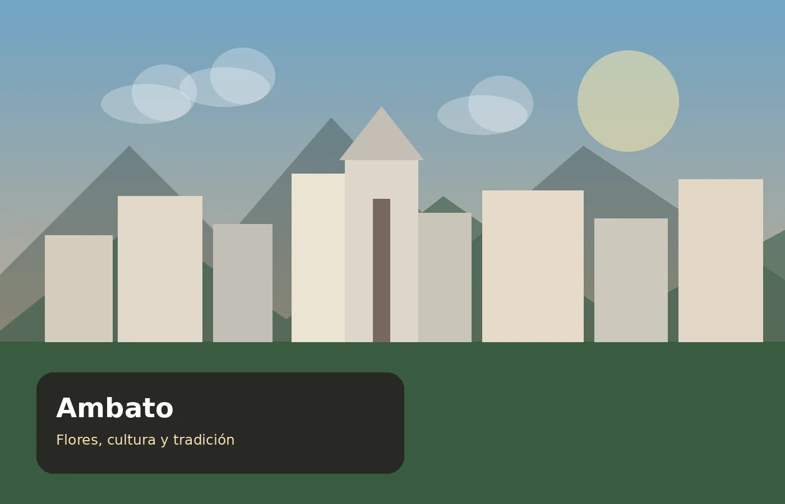

Misión
Promocionar los atractivos de Ambato mediante información clara y experiencias turísticas que valoren su cultura, naturaleza y tradiciones.
Vive Ambato es una agencia ficticia creada para promocionar la identidad turística, cultural y recreativa de la ciudad.
Vive Ambato nace como un proyecto académico que busca reunir en un mismo portal los principales atractivos, espacios culturales, parques, sabores y celebraciones de Ambato.
La propuesta está dirigida a visitantes que desean conocer la ciudad de manera sencilla, combinando patrimonio, naturaleza, gastronomía y recreación.

Promocionar los atractivos de Ambato mediante información clara y experiencias turísticas que valoren su cultura, naturaleza y tradiciones.
Ser una propuesta digital de referencia para descubrir Ambato y motivar visitas responsables a sus espacios culturales y recreativos.
Mostrar que Ambato ofrece mucho más que un punto de paso: es una ciudad con historia, sabores, parques y celebraciones propias.
Promovemos el cuidado de los espacios y del patrimonio.
Valoramos las tradiciones y la historia ambateña.
Presentamos información ordenada y útil al visitante.
Impulsamos una visita responsable de los atractivos.